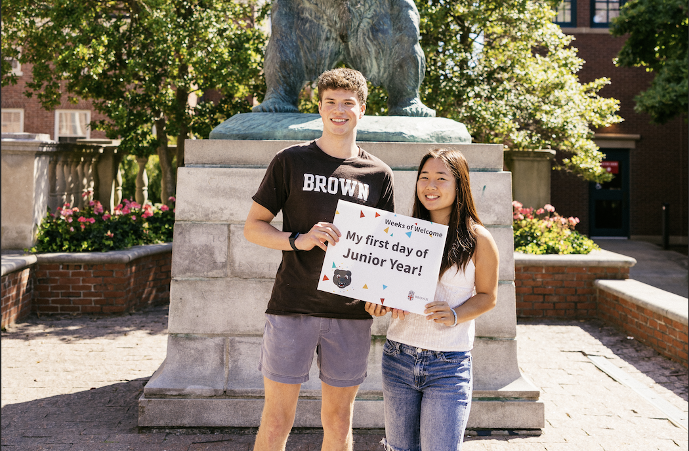

studying Behavioral Sciences & CS (see below 😋) at Brown 🧠💻

an executive board member of the Vietnamese Student Association 🇻🇳
currently training for my second half marathon 🏃🏻‍♀️💨
studying Behavioral Sciences & CS (see below 😋) at Brown 🧠💻
an executive board member of the Vietnamese Student Association 🇻🇳
currently training for my second half marathon 🏃🏻‍♀️💨
If you liked what you saw, let's chat! I can be reached in a couple of ways :)
1. Email 📧: tiffany_m_tran@brown.edu
2. LinkedIn: Tiffany's LinkedIn Profile
3. Phone ☎️: ring ring... number could not be found🙃 Please try the first two options😋